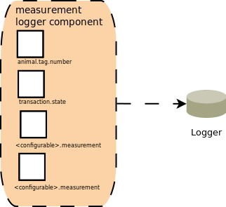

Measurement Logger iRouter Component
Functionality
The Measurement Logger iRouter component is a user configurable log writer. It acts as a wireAdmin to logging gateway.
Consumer Scopes
- transaction.state
- animal.tag.number
<configurable>.measurement- User configurable prefix
- Can configure multiple instances
